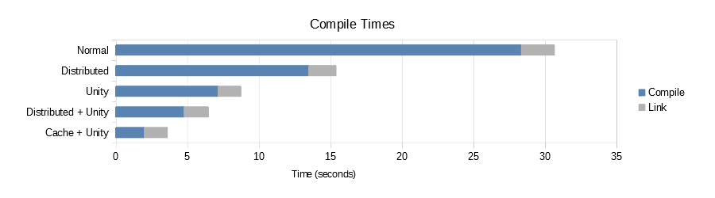

Welcome to FASTBuild!
FASTBuild is a high performance, open-source build system for Windows, Linux and OS X. It supports highly scalable compilation, caching and network distribution.
From the largest studios in the world to the smallest independent developers, FASTBuild is used in production every day to develop for PC/Mac/Linux, Consoles, Smartphones and retro system.
FASTBuild gives you all the tools you need to speed up your builds, allowing for improvements of 10x or more over other build systems.
More info...
From the largest studios in the world to the smallest independent developers, FASTBuild is used in production every day to develop for PC/Mac/Linux, Consoles, Smartphones and retro system.
FASTBuild gives you all the tools you need to speed up your builds, allowing for improvements of 10x or more over other build systems.
More info...

FASTBuild v0.99 released! (3-Nov-2019)
An updated version of FASTBuild can now be downloaded, featuring:
- Distributed Compilation on OSX and Linux
- Incremental builds after BFF edits (no forced rebuilds)
- Performance Improvements
- Bug fixes and enhancements
- More...